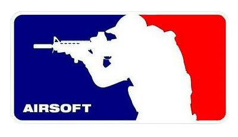
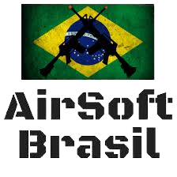

Airsoft (ou Softair) é um jogo desportivo onde os jogadores participam em simulações policiais, militares ou de mera recreação com armas de pressão que atiram projéteis plásticos não letais, utilizando-se frequentemente de tácticas militares.
As armas estão em escala de 1:1, são de plástico (ABS) e disparam projéteis de 6 ou 8 mm que pesam entre 110-600 miligramas (conhecidas como BBs). A propulsão da arma pode ser através de mola (spring), mecanismos eléctricos (AEG) ou gás comprimido incluindo gás propano (ou green gas, que é propano adicionado com óleo lubrificante, como o silicone por exemplo), cápsulas de CO2, ar ou gás refrigerante HFC134a.
O jogo é bastante popular em vários países asiáticos, como o Japão, China, Taiwan, Macau, Coreia do Sul e Filipinas, onde armas reais são dificeis de obter devido a leis locais. Devido a isto, a maior parte das armas de Airsoft e acessórios são fabricados nestes países.
Atualmente existe um crescente interesse no Ocidente, especialmente nos Estados Unidos, Canadá, Reino Unido, Alemanha, Suíça, França, Espanha, Portugal, Finlândia, Itália e Bélgica.
Recentemente, alguns grupos praticantes desse esporte estão buscando a sua inserção na atividade conhecida como reconstituição histórica de batalhas e/ou missões militares mais recentes, como as da Segunda Guerra Mundial e da Guerra do Vietnã.
No Brasil, o Airsoft começou a ser divulgado em 2003 pelo Portal Airsoft Brasil. Após diversas reuniões com a Diretoria de Fiscalização de Produtos Controlados, o airsoft passou a ser conhecido pelo Órgão do Governo Brasileiro que regula os produtos considerados controlados no país. Esta reunião deu início a elaboração de diversas minutas que resultaram na edição da atual Portaria que oficialmente cita o nome airsoft no Brasil. Sendo assim em Dezembro de 2007, foi lançada a PORTARIA Nº 006-D LOG, que regulamenta o uso dos equipamentos usados na prática do esporte airsoft.
Em fevereiro de 2010, o exército publicou então a Portaria 002 Co-Log, que revogou a portaria anterior e passou a exigir que as armas de pressão de airsoft tenham a extremidade pintada de laranja ou vermelho vivo para diferenciá-las das armas de fogo. Graças a portaria e ao aparecimento de lojas nacionais a comunidade dos jogadores está cada vez mais ativa e crescente, o esporte tem sido mais divulgado e já conta atualmente com milhares de jogadores.
Tecnicamente, no Brasil, armas de airsoft são classificadas pelo Exército como "armas de pressão" sejam elas por ação de mola ou ação de gás. A aquisição das armas pode ser feita por pessoa maiores de 18 anos em lojas autorizadas. Portanto, no Brasil não é correto chamar as armas de Airsoft de simulacros nem de marcadores, posto que simulacros não têm capacidade de tiro, e marcadores não possui definição legal em lei.
A comunidade de jogadores é bastante ativa e a grande maioria dos grupos exige que o jogador apresente nota fiscal de loja devidamente autorizada pelo Exército para poder jogar, inibindo assim o descaminho e importação ilegal de tais armas, prática que tornou possível o desenvolvimento sadio da modalidade, com a presença no País de diversas lojas regularizadas para a venda de armas de Airsoft e insumos para os jogadores. Em praticamente uma década de atividades não se tem notícia de nenhum acidente mais grave entre jogadores no Brasil, sendo que a única recomendação obrigatória é o uso de óculos de proteção, embora alguns jogadores prefiram também usar máscaras para proteger toda a face.
A velocidade do disparo varia, tipicamente, de 200 até 550fps (pés por segundo) aferidos com munição 0.20g. Os disparos nesta velocidade podem ser sentidos pelos jogadores mas não causam maiores danos. A dor é equivalente a um "beliscão", tipicamente menor que outras modalidades, como o também popular Paintball. As esferas plásticas não possuem tinta em seu interior, sendo que a atividade é balizada pelo sistema de HONRA, sendo que cada jogador é responsável por se acusar quando atingido. Tal sistema tem funcionado muito bem no Brasil, especialmente devido ao fato de que somente maiores de idade participam dos jogos.